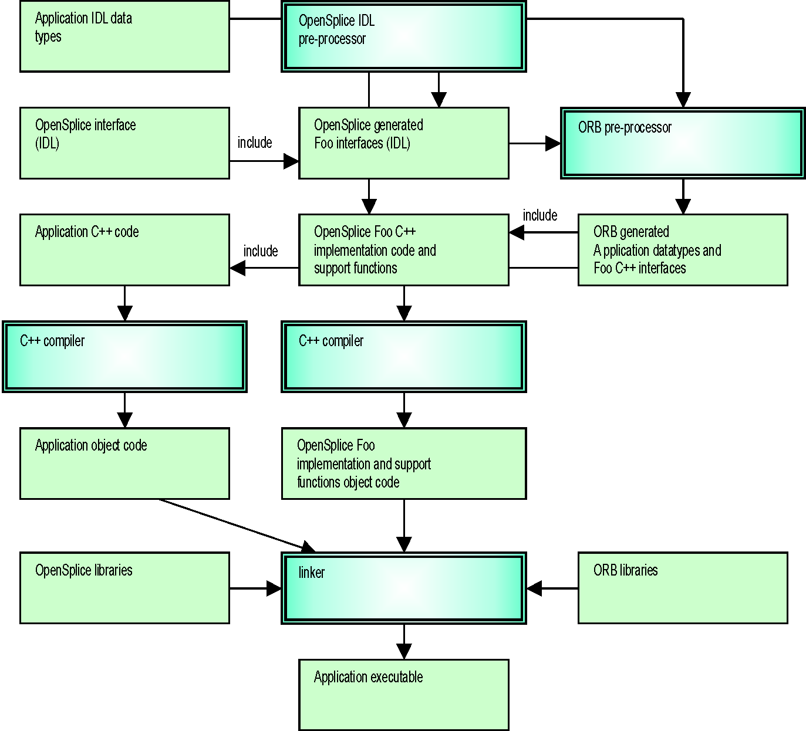
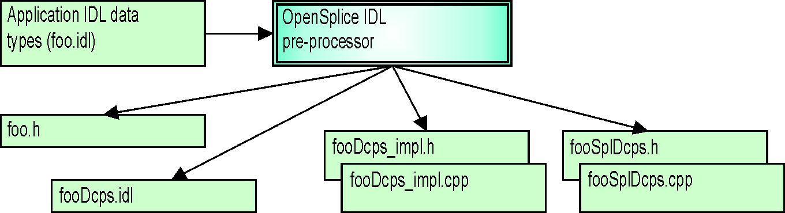
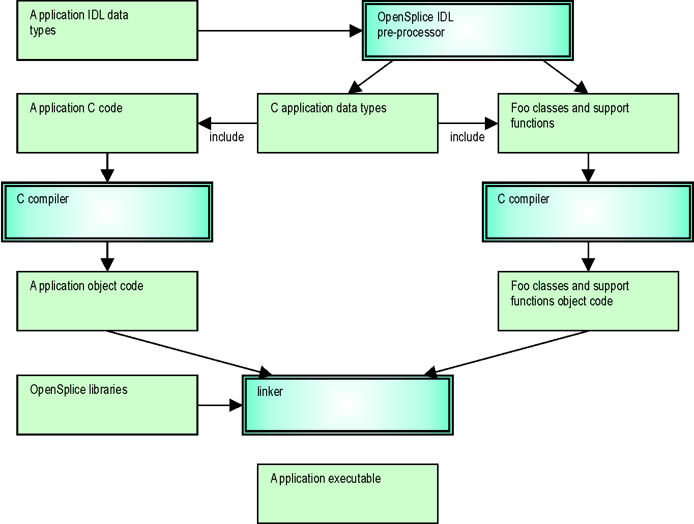
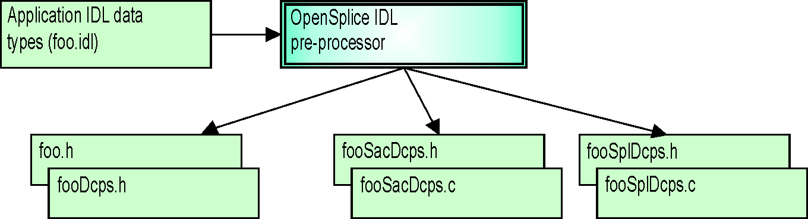
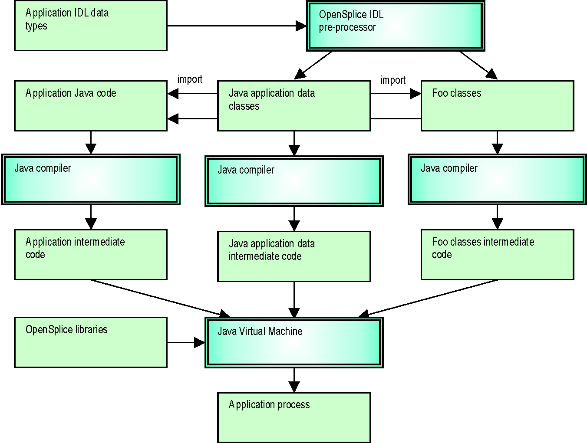
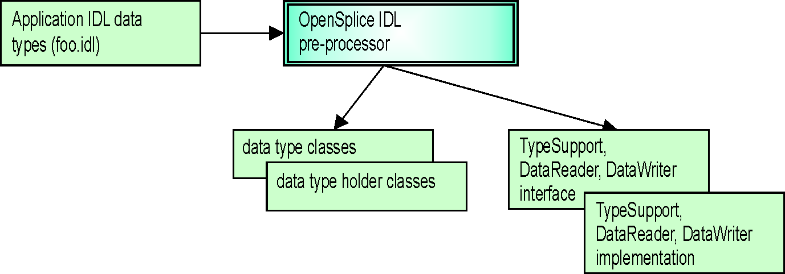

8. Modes, Languages and Processing steps¶
8.1. Integrated C++ ORB¶
The generic diagram for the ORB integrated C++ context is shown in the diagram Integrated C++ ORB.
The Vortex OpenSplice IDL Pre-processor generates IDL code for the specialized TypeSupport, DataReader and DataWriter, as well as C++ implementations and support code. The ORB pre-processor generates from the generated IDL interfaces the C++ specialized interfaces for that specific ORB. These interfaces are included by the application C++ code as well as the OpenSplice DDS generated specialized C++ implementation code. The application C++ code as well as the specialized C++ implementation code (with the support functions) is compiled into object code and linked together with the applicable OpenSplice libraries and the ORB libraries.

- Vortex OpenSplice libraries are provided for linking with OpenFusion TAO. However the source code of the C++ API is also available to build against your own ORB and/or compiler version.
Integrated C++ ORB
{kind=link}
The role of the Vortex OpenSplice IDL Pre-processor functionality is expanded in Integrated C++ ORB OpenSplice IDL Pre-processor Details. It shows in more detail which files are generated, given an input file (in this example foo.idl).
Integrated C++ ORB OpenSplice IDL Pre-processor Details
{kind=link}
The file foo.h is the only file that needs to be included by the application. It includes all files needed by the application to interact with the DCPS interface.
The file fooDcps.idl is an IDL definition of the specialized TypeSupport, DataReader and DataWriter interfaces, which will be used to generate ORB-specific C++ interface files.
The fooDcps_impl.* files contain the specialized TypeSupport, DataReader and DataWriter implementation classes needed to communicate the type via OpenSplice DDS.
The fooSplDcps.* files contain support functions required by OpenSplice DDS in order to be able to handle the specific data types.
8.2. C++ Standalone¶
The C++ standalone mode provides a Vortex OpenSplice context which does not need an ORB. Vortex OpenSplice resolves all implied IDL-to-C++ language mapping functions and requirements.
The only difference when using the standalone mode is that DDS is used as the naming scope for definitions and functions instead of the CORBA naming scope (the CORBA namespace is still supported, however, for compatibility purposes).
The diagram C Standalone is an overview of the artifacts and processing stages related to the C standalone context. For C++ the different stages are equal to the C standalone context. Because there is no ORB involved, all pre-processing is performed by the OpenSplice DDS IDL Pre-processor. The generated specialized implementations and the application’s C++ code must be compiled into object code, plus all objects must be linked with the appropriate Vortex OpenSplice libraries.
8.3. ISOC++¶
The ISOC++ mode provides a Vortex OpenSplice context which does not need an ORB. Vortex OpenSplice resolves all implied IDL-to-C++ language mapping functions and requirements. Much like C++ standalone mode, the CORBA naming scope is not used but C99 types are used in place of DDS:: types, as specified in the ISO/IEC C++ language mapping specification.
8.4. ISOC++2¶
The ISOC++2 mode provides a Vortex OpenSplice context which does not need an ORB. Vortex OpenSplice resolves all implied IDL-to-C++ language mapping functions and requirements. Much like C++ standalone mode, the CORBA naming scope is not used but C99 types are used in place of DDS:: types, as specified in the ISO/IEC C++ language mapping specification.
8.5. C Standalone¶
The C standalone mode provides an OpenSplice DDS context which does not need an ORB. Vortex OpenSplice resolves all implied IDL to C language mapping functions and requirements. The only difference when using the standalone mode is that DDS is used as the naming scope for definitions and functions.
The diagram C Standalone shows an overview of the artifacts and processing stages related to the C standalone context. Because there is no ORB involved, all the pre-processing is done by the Vortex OpenSplice IDL Pre-processor. The generated specialized class implementations and the application’s C code must be compiled into object code, plus all objects must be linked with the appropriate Vortex OpenSplice libraries.
C Standalone
{kind=link}
The role of the Vortex OpenSplice IDL Pre-processor functionality is expanded in the diagram C Standalone OpenSplice IDL Pre-processor Details, providing more detail about the files generated when provided with an input file (foo.idl this example).
C Standalone OpenSplice IDL Pre-processor Details
{kind=link}
The file foo.h is the only file that needs to be included by the application. It itself includes all necessary files needed by the application in order to interact with the DCPS interface.
The file fooDcps.h contains all definitions related to the IDL input file in accordance with the OMG’s IDL-to-C language mapping specification.
The fooSacDcps.* files contain the specialized TypeSupport, DataReader and DataWriter classes needed to communicate the type via OpenSplice DDS.
The fooSplDcps.* files contain support functions required by OpenSplice DDS in order to be able to handle the specific data types.
8.6. C99 Standalone¶
The C99 standalone mode is simular to the C standalone mode. The difference is that the C99 standalone mode is used to support the C99 version of the C programming language. Except for some small changes in the generated artifacts this mode operates the equal to the C standalone mode. See for a description of the processing stages the description in section C Standalone.
The difference with the C standalone mode is that the primitive types are mapped to the corresponding C99 types. Further bounded strings are mapped to char array’s with a upperboundone larger than specified in the idl to allow for the terminating 0 character.
Further an additional file fooDcps.c is generated which contains the information to register the type information with OpenSplice DDS.
8.7. Java Standalone¶
The Java standalone mode provides a Vortex OpenSplice context without the need of an ORB, which still enables portability of application code because all IDL Java language mapping implied functions and requirements are resolved by Vortex OpenSplice.
The diagram Java Standalone shows an overview of the artifacts and processing stages related to the Java standalone context. The Vortex OpenSplice IDL Pre-processor generates the application data classes from IDL according the language mapping. The Vortex OpenSplice IDL Pre-processor additionally generates classes for the specialized TypeSupport, DataReader and DataWriter interfaces. All generated code must be compiled with the Java compiler as well as the application Java code.
Java Standalone
{kind=link}
The role of the Vortex OpenSplice IDL Pre-processor functionality is more magnified in the diagram Java Standalone OpenSplice IDL Pre-Processor Details. It shows in more detail which files are generated based upon input file (in this example foo.idl).
Java Standalone OpenSplice IDL Pre-Processor Details
{kind=link}
8.8. Integrated Java ORB¶
The Java CORBA mode provides a Vortex OpenSplice context for the JacORB ORB. The Vortex OpenSplice IDL Pre-processor generates IDL code for the specialized TypeSupport, DataReader and DataWriter, as well as Java implementations and support code. The ORB pre-processor generates the Java ‘Foo’ classes, which must be done manually. These classes are included with the application Java code as well as the OpenSplice DDS generated specialized Java implementation code. The application Java code as well as the specialized Java implementation code (with the support functions) is compiled into class files and can be used together with the applicable OpenSplice libraries and the ORB libraries.
The artifacts and processing stages related to the Java CORBA cohabitation context are similar to those of the standalone mode, with one exception: the ‘Foo’ classes will not be generated by the Vortex OpenSplice IDL Pre-processor. Instead these classes should be generated by the JacORB IDL Pre-processor.

Table Of Contents
Previous topic
Next topic
9. Extensible and Dynamic Topic Types for DDS annotation support